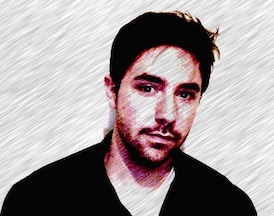

About Me
Notice me, senpai.
Graduate Research Assistant, Azad Lab
University of North Texas
My origin story is far from exciting, and filled with instances of me pushing restart on the path I thought I wanted. Nonetheless, it is my journey, and it has led me into a life filled with wonderful friends, interesting problems, and a career uniquely tailored to my skillset.
I graduated cum laude with a Bachelor of Science in Biology in 2011 from the University of North Texas.
Currently, I am a graduate research assistant and part-time lecturer based out of the Azad Lab
at UNT. During the Fall and Spring semesters, I teach Biochemistry 3622/4560. My current focus revolves around the application of machine learning, network theory, and transcriptomic analysis to better elucidate the evolutionary relationships between plants and microbial organisms. I have also been granted several opportunities to work with other labs within the department, as well as additional collaborators from around the world. This typically involves next-gen sequencing projects, with an emphasis on differential expression analysis.
I try to spend my free time on those closest to me. That's a short but important list including my impossibly patient wife, two needy cats, and a senior-citizen rabbit with aggression issues. I'm also a hobbyist programmer, currently toying with C++, Perl, R, Python, and lately Java. I love a good horror novel, and I try to quell the wet-lab scientist inside of me by experimenting in the kitchen. So far, nobody has died, but my smoke alarm probably thinks it's stationed in Centralia, PA.